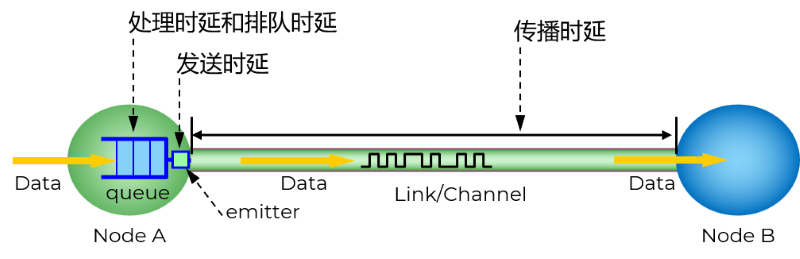
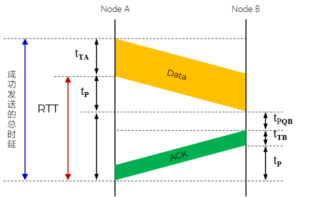

速率 Rate
表示单位时间内传输的数据量
也叫比特率
每秒搬运了多少数据
数据传输的 额定 速度
单位：比特每秒；bps、bit/s
速率 Rate
带宽 Bandwidth
从时域 (Time Domain)角度，指网络中某通道传送数据的能力 - 网速
表示在单位时间内网络中的某信道所能通过的 最高 数据率
单位：比特每秒；bps、bit/s
还有一个衡量指标，在频域 (Frequency Domain) 使用赫兹 Hz
带宽 Bandwidth
多车道高速公路
高铁
Wi-Fi 2.4GHz 频段 vs Wi-Fi 5GHz 频段
吞吐量 Throughput
实际 Realtime 通过网络传输的数据量在一条路径上，吞吐量受限于最慢的链路-即瓶颈链路（短板效应）
整个路径的吞吐量由 最慢 的那段链路决定
单位：比特每秒；bps、bit/s
短板效应
高速公路 + 乡间小路
开车从高速进入乡间小路后，整段路程的平均速度就被乡间小路拉下来了
无论高速多快，你最终只能以 30 km/h 的速度通过最后那段路
速率
1kbit/s=1×103 bit/s
1Mbit/s=1×106 bit/s
1Gbit/s=1×109 bit/s
容量
1B=8 bits
1KB=210 Bytes=1024 Bytes
1MB=220 Bytes=1024×1024 Bytes=1024 KB
1GB=230 Bytes=1024×1024×1024 Bytes=1024 MB
延迟 Delay
数据从发送端传输到接收端所需的时间
也称为延迟或迟延 latency
单位：秒 s
包括 4 个部分

延迟 Delay
1. 发送时延 Transmission Delay
也称为传输时延
主机将分组的所有比特推向链路所需的时间
从发送数据的第一个比特算起，到最后一个比特发送完毕所需的时间
发送时延发生在机器内部的发送器中，与传输信道的长度（或信号传送的距离）没有任何关系
由带宽和分组大小决定
发送时延
2. 传播时延 Propagation Delay
是电磁波在信道中传播一定的距离需要花费的时间
传播时延则发生在机器外部的传输信道媒体上，而与信号的发送速率无关
信号传送的距离越远，传播时延就越大
由物理距离和传播速度决定
传播时延
电磁波在不同媒介中的传播速率
item
desc
自由空间/光速
3.0×105 Km/s
铜线电缆
2.3×105 Km/s
光纤
2.0×105 Km/s
考虑到传播时延和信号衰减，IEEE 802.3 规定：单段网线（双绞线）最大传输距离是 100m
工程实践推荐 50m-90m
3. 排队时延
分组在路由器输入输出队列中排队等待处理和转发所经历的时延
排队时延的长短往往取决于网络中当时的通信量
当网络的通信量很大导致拥塞时，会发生队列溢出，致使分组丢失，这相当于排队时延为无穷大
4. 处理时延
主机或路由器在收到分组时，为处理分组（例如分析首部、提取数据、差错检验或查找路由）所花费的时间
一般说来，小时延的网络要优于大时延的网络
在某些情况下，一个低速率、小时延的网络很可能要优于一个高速率但大时延的网络
总时延中，哪一种时延占主导地位，必须具体情况具体分析
判断题：在高速链路（或高带宽链路）上，比特会传送得更快些。
主机 A 到主机 B 的路径上有三段链路，其速率分别为 2 Mbit/s、1 Mbit/s 和 500 kbit/s。
答：
1. 三段链路中，最慢的速率是 500 Kbit/s，所以传送该文件的吞吐量为 500 kbit/s
2. 总传送时间 = 文件大小 / 吞吐量
= 10 MB / 500 kbit/s
= 10 × 210 × 210 × 8 / (500 × 1000)
= 10 × 1024 × 1024 × 8 / (500 × 1000)
≈ 167.77 s
≈ 2.8 min
3. 因为实际网络中存在协议开销、传播时延、处理时延等多种因素，所以只能估算
结点 A 要将一个数据块通过 1000 km 的光纤链路发送给结点
B。假设忽略处理时延和排队时延。请分别计算下列情况时的总时延，并验证“数据的发送速率越高，其传送的总时延就越小”的说法是否正确。
答：
传播时延 = 1000 Km / 2.0 × 105 km/s = 5 ms
（1）发送时延 = 100 × 220 × 8 bit ÷ 106 bit/s= 838.9 s
总时延 = 838.9 s+ 0.005 s≈ 838.9 s
（2）发送时延 = 100 × 220 × 8 bit÷ 108 bit/s= 8.389 s
总时延 = 8.389 s+ 0.005 s= 8.394 s。缩小到（1）的近 1/100
（3）发送时延 = 1 × 8 bit÷ 106 bit/s= 8 × 10-6 s = 8 μs
总时延 = 0.008 ms+ 5 ms= 5.008 ms
（4）发送时延 = 1 × 8 bit÷ 109 bit/s= 8 × 10-9 s = 0.008 μs
总时延 = 0.000008 ms+ 5 ms= 5.000008 ms。与（3）相比没有明显减小
有一个点对点链路，长度为 50 km。若数据在此链路上的传播速率为 2 × 108 m/s，
试问链路的带宽应为多少才能使传播时延和发送 100 字节的分组的发送时延一样大？
答：
传播时延 = 链路长度/链路带宽 = 50km/2 × 108 = 2.5 × 10-4 s
1. 分组为 100 Bytes
发送时延 = 100 Bytes / 带宽 = 传播时延
∴ 带宽 = 100 Bytes / 传播时延 = 100 × 8 / 2.5 × 10-4 = 3.2 × 106 bit/s = 3.2 Mbit/s
2. 分组长度为 512 Bytes
带宽 = 512 Bytes / 传播时延 = 1.6384 × 107 bit/s
往返时间 RTT
Round-Trip Time
往返时间是指数据从发送端到接收端再返回发送端所需的时间
表示从发送方 A 发送完数据，到发送方 A 收到来自接收方 B 的确认总共经历的时间
不包括发送方节点 A 的发送时延和收到数据后的排队时延和处理时延

往返时间 RTT
结点 A 要将一个 100 MB 数据以 100 Mbit/s 的速率发送给结点 B。B 正确收完该数据后，就立即向 A 发送确认。假定 A 只有在收到 B 的确认信息后，才能继续向 B
发送数据，且确认信息很短。计算 A 向 B 发送数据的有效数据率。
数据的有效数据率
答：
有效速率消耗的时间包括实际的发送时间和等待发送的时间
发送时延 = 数据长度/发送速率 = 100 × 220 × 8 ÷ (100 × 106 ) ≈ 8.39 s
有效数据率 = 数据长度/(发送时延 + RTT) = 100 × 220 × 8 ÷ (8.39 + 2) ≈ 80.7 Mbit/s
补充说明
在互联网中，往返时间还包括各中间结点的处理时延、排队时延以及转发数据时的发送时延
当使用卫星通信时，往返时间 RTT 相对较长，此时，RTT 是很重要的一个性能指标
多节点 RTT
延迟带宽积 Bandwidth-Delay Product
延迟带宽积是指网络中传播延迟与带宽的乘积，表示在传播路径上可以 容纳 的数据量
又称以比特为单位的链路长度
管道中的比特数：从发送端发出但尚未到达接收端的比特数；滞留 在信道中的数据
在任意时刻，链路中最多能容纳多少个比特（ 在途比特数 ）
延迟带宽积 Delay
带宽（Bandwidth）：水管的粗细（每秒钟能流出多少水）
传播时延（Delay）：水流完这根水管需要花多长时间
延迟带宽积：水管的总体积（容量）；当水管完全装满水时，里面有多少水
只有管道都充满比特时，链路才得到了充分利用
延迟带宽积示意图
利用率 Utilization
利用率是指网络资源被实际使用的比例
根据排队论，当某信道的利用率增大时，引起的时延会迅速增加
1. 信道利用率
Channel Utilization
某信道有百分之几的时间是被利用的（即有数据通过）完全空闲的信道的利用率是零
2. 网络利用率
Network Utilization
全网络的信道利用率的加权平均值
主机 A 向主机 B 连续传送一个 600000 bit 的文件。A 和 B 之间有一条带宽为 1 Mbit/s 的链路相连，距离为 5000 km，在此链路上的传播速率为
2.5 × 10 8 m/s。
答：
1. 比特总数 = 延迟带宽积 = 带宽 × 传播时延
带宽 = 1 Mbit/s = 106 bit/s
传播时延 = 5000 km / (2.5 × 108 m/s) = 0.02 s
比特总数 = 106 × 0.02 = 20000 bit
2. 比特宽度 = 链路长度/比特总数
= 5000 km / 20000 bit
= 5 × 106 /20000
= 250 m
3. 目标：每比特宽度 = 链路长度 = 5000 km
此时链路上只能有 1 个比特（因为长度 / 每个比特长度 = 1）
链路长度和传播速率没变，传播时延固定为 0.02 s
∵ 带宽 × 0.02 = 1
∴ 带宽 = 1 / 0.02 = 50 bit/s
说明：相应的，带宽调整后，链路的发送速率也相应调整
比特宽度 = 传播速率 / 发送速率
表示当发送方以某个速率发送数据时，第一个比特在链路上向前传播，而发送方继续发送后续比特，此时相邻两个比特在链路介质上的空间距离
主机 A 向主机 B 发送一个长度为 107 比特的报文，中间要经过两个节点交换机。
分组交换和报文交换
答：
1. 如果采用报文交换
主机A传送数据到交换机1的时间 = 107 / 2 Mbit/s = 5s
主机A传送数据到主机B的时间 = 3 × 5s = 15s
2. 采用分组交换：划为为 1000 个分组，每个分组大小为 107 / 1000 = 104
主机A传送数据到交换机1的时间 = 104 / 2 Mbit/s = 5ms
主机A传送数据到主机B的时间 = 3 × 5ms = 15ms
第一个分组到达 B 需要 15 ms
之后，每隔 5 ms（发送一个分组的时间），就有一个新分组到达 B
所以 1000 个分组全部到达 B 的时间 = 15ms+(1000−1)×5ms = 5010ms = 5.01s
3. 略